🕊️
Basic Creations
Here you will find the simplest and beginner-friendly origami creations!
Animals:
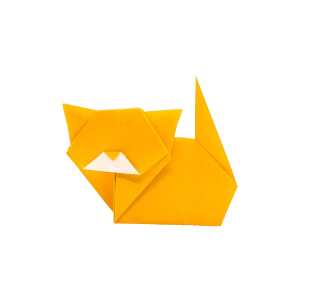
Cat
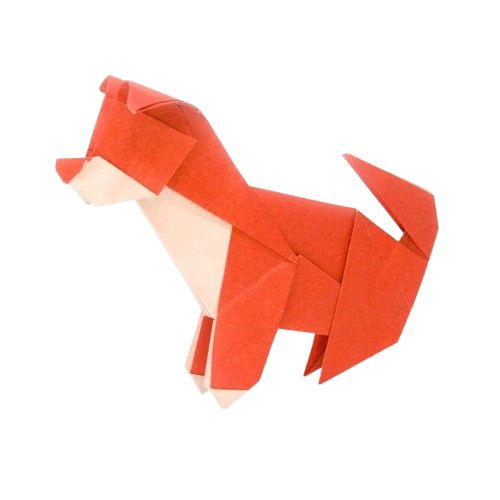
Dog
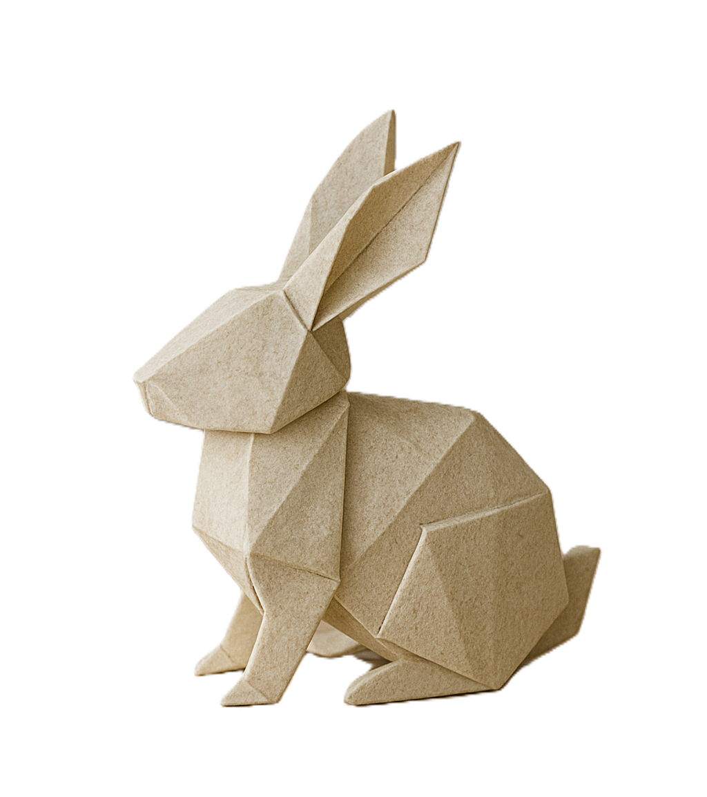
Rabbit
Birds:
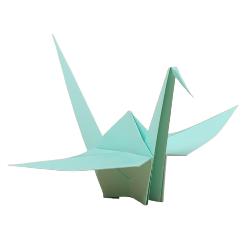
Crane
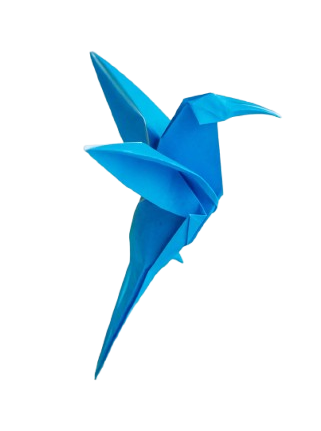
Hummingbird
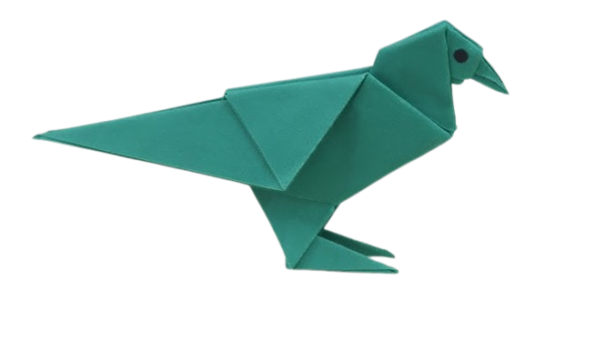
Pigeon
Boats:
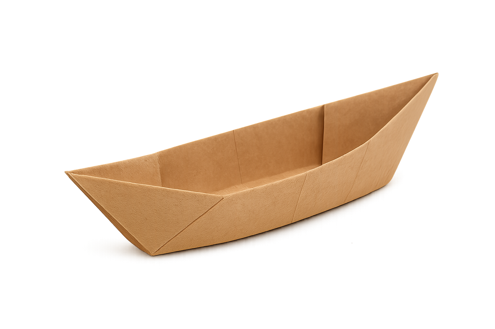
Canoe
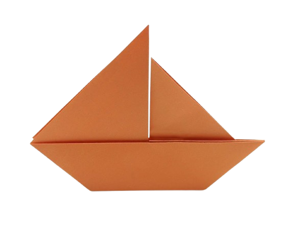
Sailboat
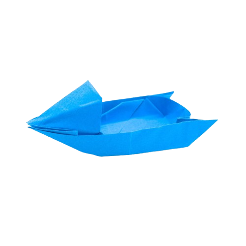
Speedboat
Flowers:
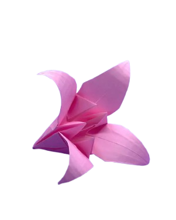
Lily
.png)
Tulip
Lotus
Hats & Crowns:
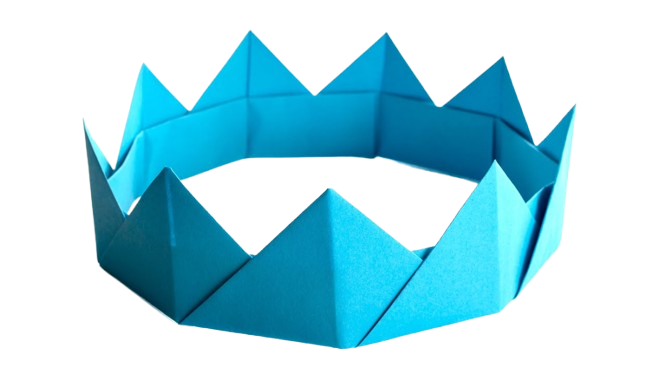
Crown
.png)
Sailor Hat
.png)
Samurai Hat
Hearts:
.png)
Flat Heart
.png)
Puffed Heart
.png)
Winged Heart
Insects:
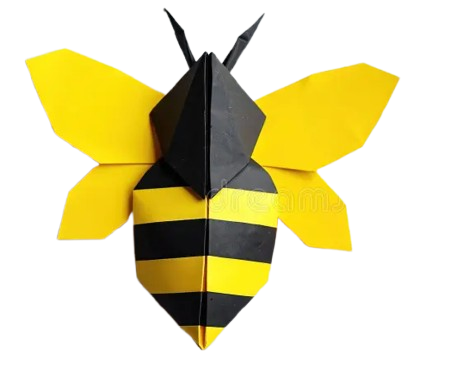
Bee
.png)
Beetle
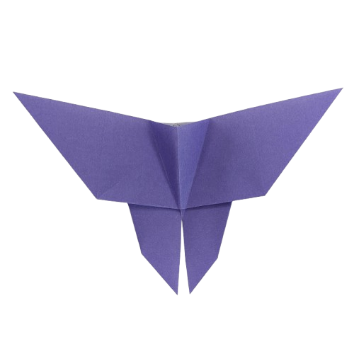
Butterfly
Ocean Life:
.png)
Crab
.png)
Turtle
.png)
Whale
Stars:
.png)
Lucky Star
.png)
Modular Star
.png)
Ninja Star
Seasonal Decoration:
.png)
Lantern
.png)
Snowflake
.png)
Tree
🐉
Elaborate Creations
Here you will find the most detailed and complex origami creations!
Modular:
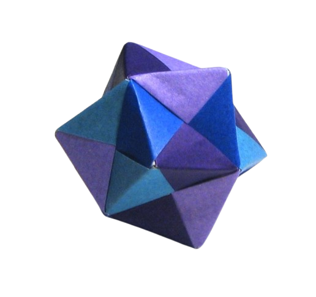
Octahedron
.png)
Sonube Unit
.png)
Tamatebako Cube
Dragon:
.png)
Ryu Zin 3.5
.png)
Three Headed
.png)
Whelp
Mythical Creatures:
.png)
Griffin
.png)
Phoenix
.png)
Unicorn
Tessellation:
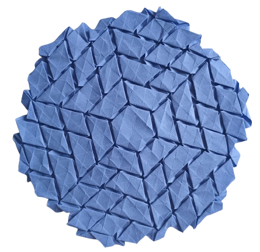
Hexagon Twist
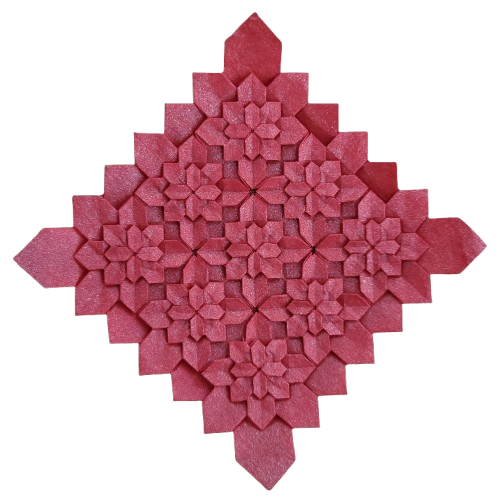
Hyrangea
.png)
Square Twist
Dinosaur:
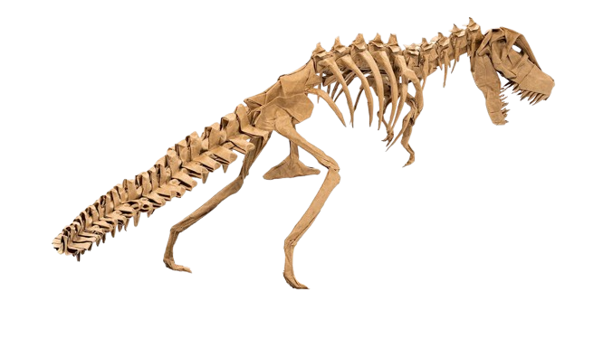
T.Rex
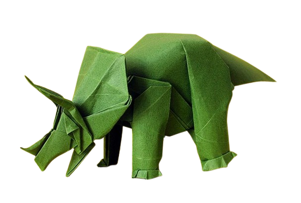
Triceroptops
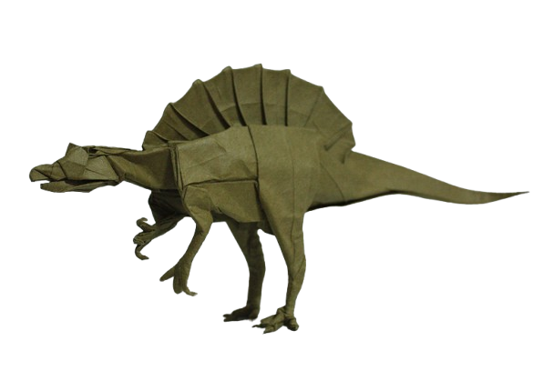
Spinosauras
Architecture:
.png)
Eiffel Tower
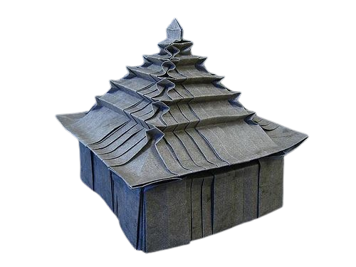
House
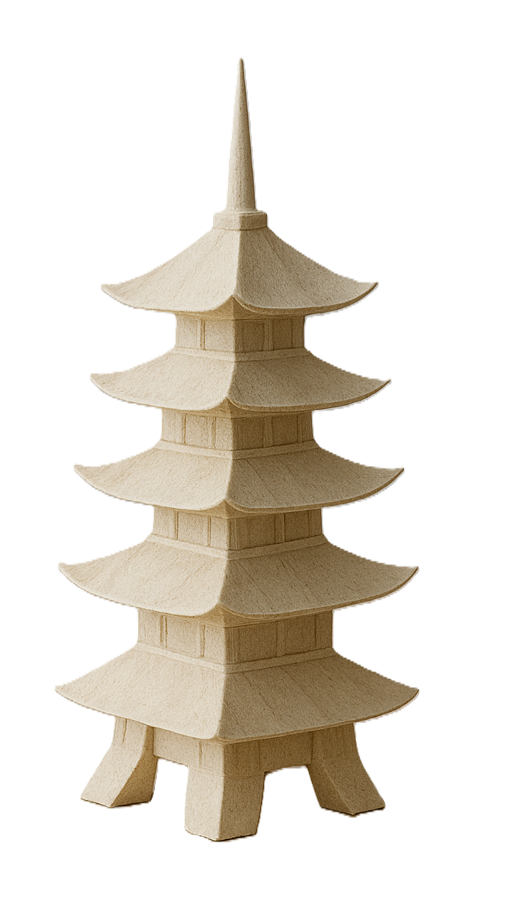
Padoga
Accessories:
Bow
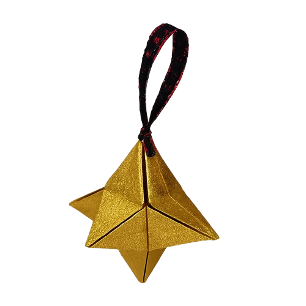
Purse
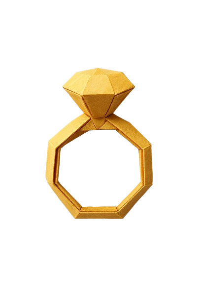
Ring
Advanced Flowers:
.png)
Camellia
.png)
Cherry Blossom
.png)
Kawasaki Rose
Mask /Face:
.png)
Kitsune Mask
.png)
Oni Mask
.png)
Samurai Mask
Wet-Folded Sculpture:
.png)
Bull
.png)
Elephant
.png)